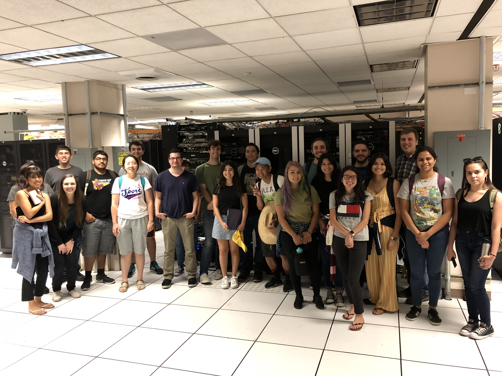

These are materials from the 2018 Cal State Fullerton Workshop on High-Performance Computing and Gravitational Waves. I designed and led this workshop, held at Cal State Fullerton’s Gravitational-Wave Physics and Astronomy Center, on August 13, 2018 – August 17, 2018.

The movies show the black-hole horizons, just after two black holes merged into one, according to supercomputer calculations by our workshop participants.